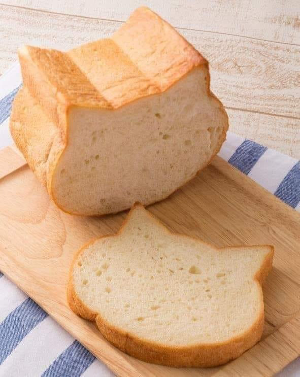

Once upon a time in the quaint town of Crustington, there lived a rather peculiar piece of toast named Catloaf. Catloaf was not your ordinary breakfast item; he had an uncanny resemblance to a cat, complete with whiskers and a tail. In a town where every day was an adventure, Catloaf decided it was time to embark on a journey of his own. One sunny morning, Catloaf set out with a determined crumbly stride, his whiskers twitching with excitement. His first stop was the local grocery store, where he discovered a curious sight – mid-shelf water packaged in a paper milk container. Intrigued by the unconventional packaging, Catloaf decided to purchase a bottle. He carefully handed the cashier a few crumbs as payment and continued on his way. Feeling refreshed from his mid-shelf water, Catloaf's next destination was a charming Korean restaurant called Kim's Kimchi Haven. As he entered, the fragrant aroma of bulgogi and various ban chan dishes filled the air. Catloaf decided to indulge in a feast of flavors, savoring each bite of the delicious Korean cuisine. The restaurant staff, bemused by the sight of a cat-shaped toast enjoying their food, smiled and treated Catloaf like any other customer. With a satisfied belly, Catloaf continued his adventure through Crustington. As he strolled down the streets, he noticed a peculiar-colored Toyota Camry parked by the curb. The car's hue was a mix of vibrant orange and teal, catching Catloaf's attention. Intrigued, he hopped up on the hood and began tapping it with his toasty paws. Little did he know, the owner, a puzzled but amused driver, watched as Catloaf inspected the unusual vehicle. After his encounter with the Toyota Camry, Catloaf felt a calling from the nearby beach. As he approached the shore, he discovered a sad sight – two crabs trapped in a net. Unable to resist lending a helping paw, Catloaf sprang into action. With swift movements, he nibbled at the net, setting the crabs free. The grateful crustaceans scuttled away, leaving Catloaf with a sense of accomplishment. As the sun dipped below the horizon, Catloaf decided it was time to head home. The day had been filled with unexpected delights, from mid-shelf water in a paper milk container to the flavors of bulgogi and the rescue of two grateful crabs. With each crumbly step, Catloaf reflected on the wonders of his adventure in Crustington – a town where even a piece of toast shaped like a cat could find joy and fulfillment in the most unexpected places. And so, Catloaf returned to his cozy spot on the kitchen counter, ready to share his tales with the other breakfast items. Little did he know that his adventures were just beginning, and there were many more toasty escapades awaiting him in the charming town of Crustington.
/\_____/\ / o o \ ( == ^ == ) ) ( ( ) ( ( ) ( ) ) (__(__)___(__)__)